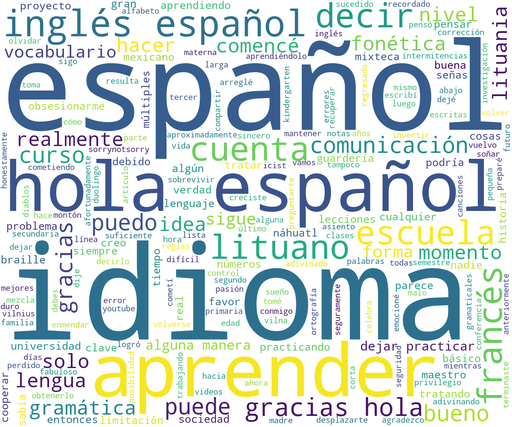
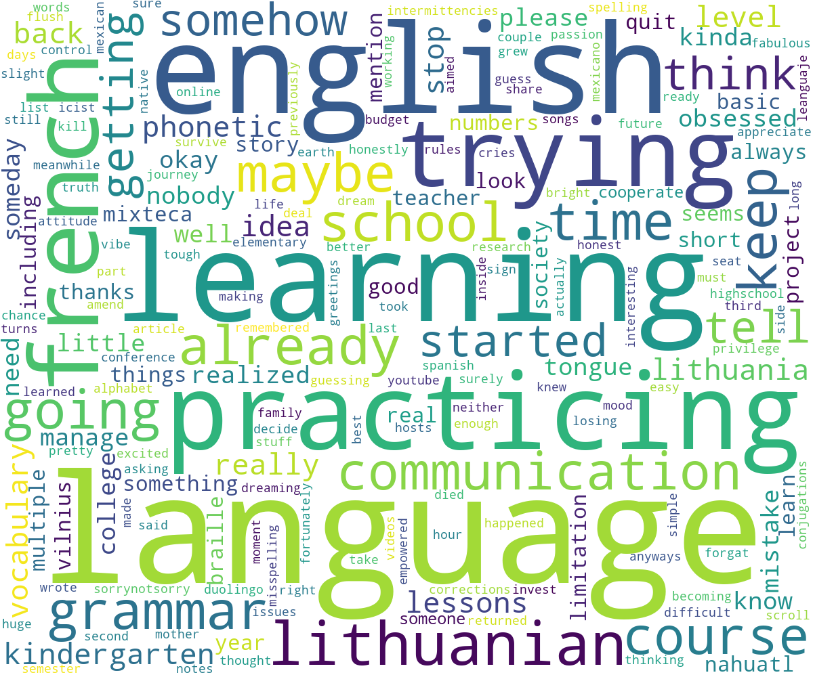
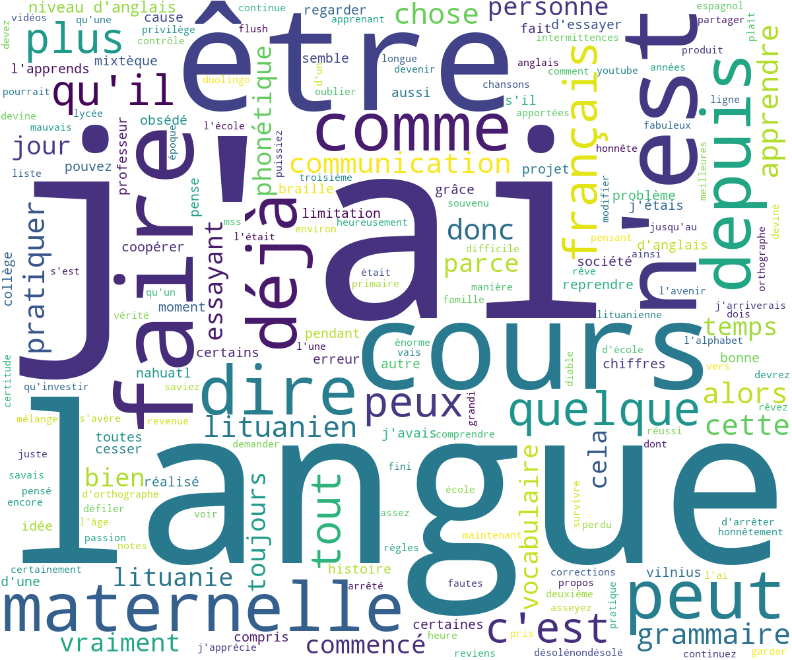
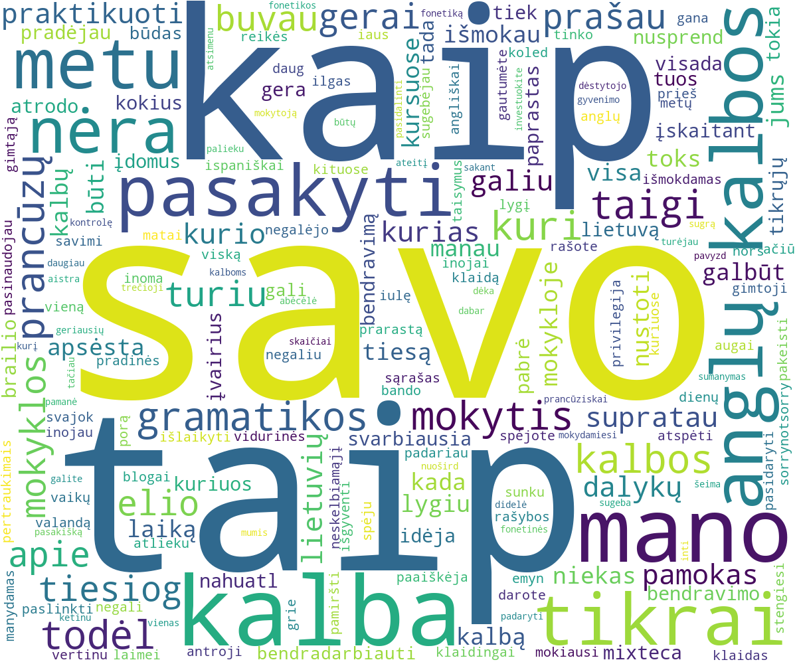
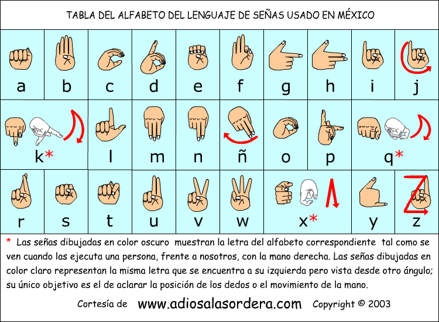

Hey! Did you know that a couple of years ago I started getting obsessed with languages? Neither did I, but it turns that yes. It's not such a long list, but someday you will need to scroll down about an hour to get it all, -let's be a little dreaming, please-.
My mother tongue. Maybe I'm just guessing but I think I've been learning it since the age of 0 days old. I can't tell if it is difficult or not, and I think nobody could tell so about their native tongue, because somehow you just grew up learning it...and okay, somehow you just keep making grammar mistakes and misspelling words.
My second language (as maybe you had already guess bc of my grammar -SorryNotSorry-). Well, I've been learning it since kindergarten, -yep-, and with some intermittencies, I'd manage to keep my kindergarten English level until highschool. I have to say that I made one huge mistake by thinking I knew already pretty enough and kinda I took the privilege to stop practicing. Fortunately, at College I realized the truth, you can not survive with kindergarten English level -okay, elementary school english level, just trying not to be so tough with myself- so I get back to my english lessons, some on my own, some at school, and some other courses, kinda trying to amend the losing time. I keep practicing it all I can -as you can see- because I realized that the key to forgat something and becoming really bad at that something, is stop practicing. I appreciate any corrections to my grammar or spelling. Thx.
Well, since 'Mss. I am going to get back my life's control/future' had already returned to her english lessons, she then thought that a third language would be a good idea, and yes it was. And yes I am that 'all good ideas Mss'. So I started learning French since 2017. I had a fabulous teacher, who somehow manage to share with us that passion for languages. At that time, and also thanks to my teacher, I started getting obsessed with phonetics. Now I can honestly say that invest your time in phonetics, is surely one of the best things you can do at learning languages. I quit my lessons for more than a year, but there are things I have always remembered for sure, like numbers, the alphabet -which being honest it's not the big deal-, family, and some phonetic rules. I have a dream, about getting back to french courses at some french school, but that has not yet happened. Meanwhile, I've been practicing on my own, a mix with Duolingo, my school notes, and online courses, also a flush of songs, and youtube videos. As I said, the key is not to quit practicing.
I know, right? You must be asking -How on earth did you end up with Lithuanian language?- Take a seat, is a really short story. I was in my last semester of College, and I had been previously working on a research project, as part of that project I wrote an article for the ICIST 2019 Conference which is hosts in Vilnius, Lithuania. There was a slight chance of me going to Vilnius, so I got all excited and ready for it. So then I aimed to learn a little about Lithuania, including its language. I learned real basic vocabulary, greetings, and numbers. In the end, I couldn't have that journey to Lithuania because of budget issues, a really sad story -cries inside-. Anyways, at that time, 2019, I was on my empowered and in the -nobody is going to stop me- mood, always trying to look on the bright side, so thanks to that attitude, I decide not to let my lithuanian vocabulary died, and better keep going with it. In short, my Lithuanian vocabulary is actually basic and simple and I can tell it seems like not so an easy language because of the conjugations, and grammar stuff, but still fun and interesting. So please don't kill my vibe.
Since the moment I realize the crush I had with explore multiple ways of communication, I decided to look over those multiple types of communication already used in my country, including some indigenous languages like Nahuatl or Mixteca, or maybe Braille or LSM. The idea behind this, is to focus on communication, to think about those "minorities" that are limited to express themselves just because most probably they wouldn't get understood. In the LSM course that I'm currently taking, they emphasize about that the limitation isn't about being deaf (or any disability you could mention), the real limitation is the society, who seems to make a true effort to highlight those differences by pretending there isn't any to care about, instead of trying to cooperate, learn, empathize and smooth the gap. So this my way about trying to cooperate with society, because someday someone may need some help -I could be that someone indeed- and maybe the only way to enable communication will be through LSM. Besides that, learning Nahuatl, Mixteca, Braille or LSM, is as relevant as learning English, French, Lithuanian, German... you mention, I mean they're also languages, and they would open you doors too at work, at friendships or cultures.
